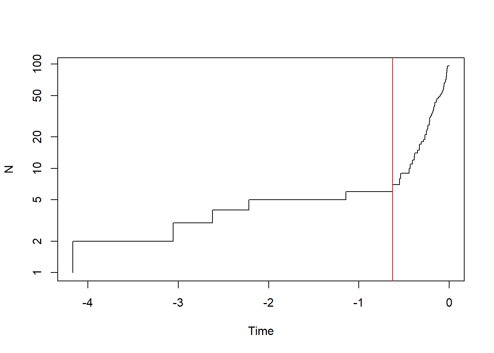
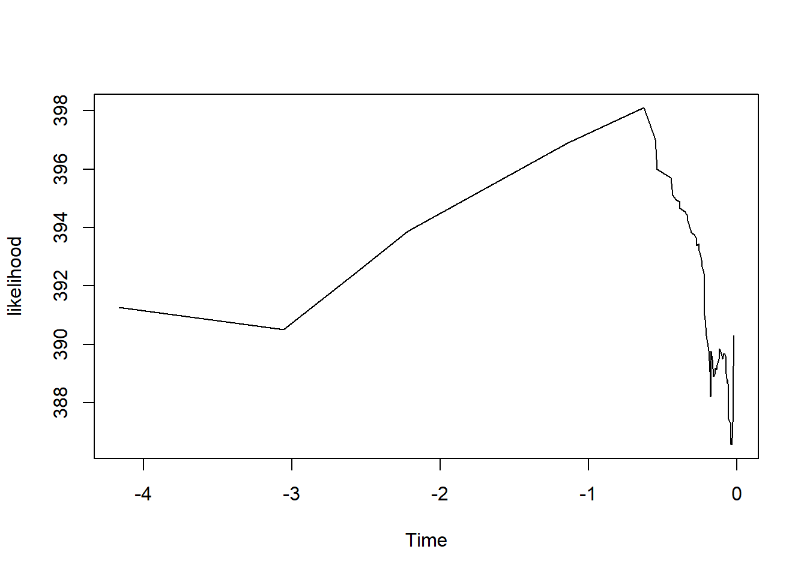
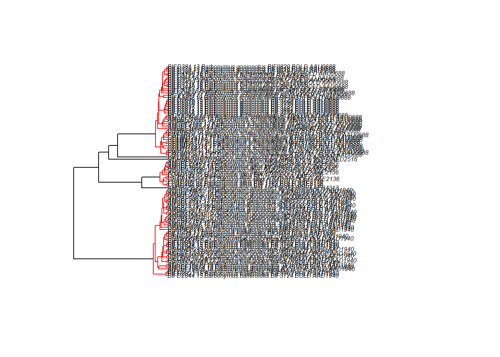
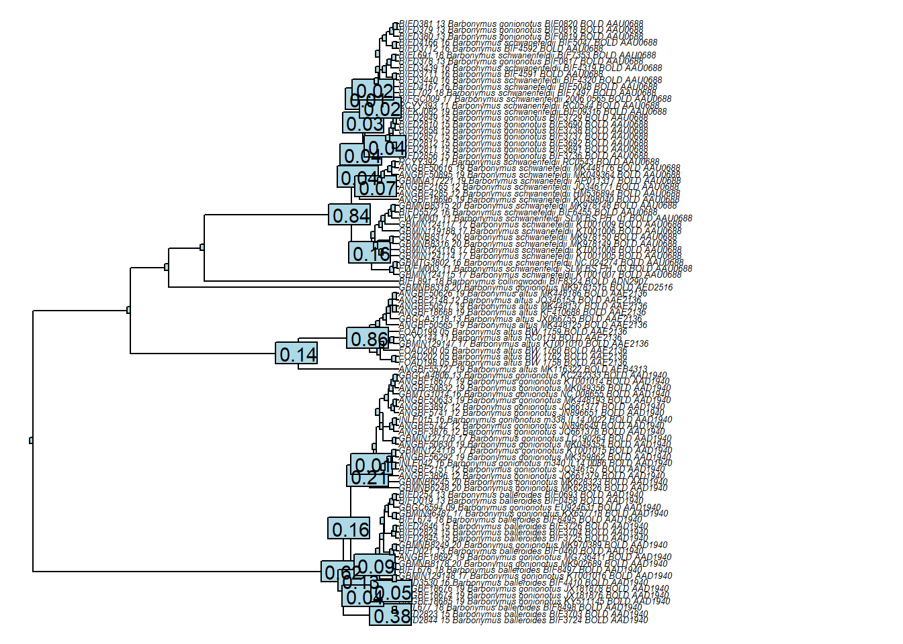

Chapter 2 Year 2024
Here is the program for the first year of the project.
2.1 Semana de formación virtual METAMAZON del 1 al 5 de julio 2024
La próxima semana tendrá lugar nuestra sesión de formación virtual. En total, 12 formadores intervendrán durante la semana para abordar diferentes aspectos del uso de códigos de barras de ADN desde la presentación general del enfoque hasta reconstrucción filogenética y genética de poblaciones para la delimitación de especies y el uso de bases de datos internacionales de códigos de barra.
Todos los cursos serán accesibles online desde este único enlace durante toda la semana: _https://umontpellier-fr.zoom.us/j/93830263869_
La capacitación se realizará todos los días de lunes a viernes de las 9:00 hasta las 13:00 (GMT-5:00 - Lima) y incluirá una parte de cursos cuál terminará con una sesión de preguntas a las que responderán los profesores del día.
El programa detallado de la semana se encuentra aqui:
2.2 Taller Iquitos
Estamos a menos de 7 días de nuestro taller en Iquitos. Para que se pueden preparar lo mejor possible, y que su llegada se pase bien, los mandemos el programa del taller que incluye: - el programa actualizado de la semana - informaciones prácticas sobre la organización del taller - anuario de los participantes
Libraries
library(devtools)
library(rentrez)
library(phylotools)
library(readr)
library(seqRFLP)
library(dplyr)
library(ape)
library(BarcodingR)
library(splits)
library(bold)
library(splits)Descargar desde GenBank
Peru
To obtain an API Key through your NCBI account, follow these steps:
- Sign in to your NCBI account.
- Once signed in, access your account’s settings by clicking on your user name which is displayed in the top right corner of any NCBI page.
- Account settings
- Scroll down the page to the section entitled API Key Management.
- Click the Create an API Key button, which will generate a key (unique sequence of characters) displayed in the API Key Management box.
How to do trees using R ?
tree <- read.tree("Data/MCT_barbo_gmyc.nwk")
gmyc_single <- gmyc(tree, method = "single") #Optimizes genetic clusters using the generalized mixed yule coalescent.## node T loglik
## 2 -3.055273 390.5014
## 3 -2.620138 392.2448
## 4 -2.218061 393.8758
## 5 -1.142561 396.8952
## 6 -0.6267099 398.1031
## 7 -0.5476014 397.0213
## 8 -0.5382909 395.995
## 9 -0.4433933 395.7144
## 10 -0.4305619 395.1131
## 11 -0.4065495 394.9445
## 12 -0.3851693 394.8939
## 13 -0.381523 394.6614
## 14 -0.349054 394.5592
## 15 -0.3310504 394.3957
## 16 -0.329897 394.2457
## 17 -0.3070474 393.8311
## 18 -0.2845661 393.7635
## 19 -0.2681086 393.6039
## 20 -0.2679646 393.3894
## 21 -0.2537394 393.4403
## 22 -0.2521766 393.215
## 23 -0.2419285 393.0034
## 24 -0.2374474 392.887
## 25 -0.2338045 392.6641
## 26 -0.2191677 392.4317
## 27 -0.2186199 391.4239
## 28 -0.2167877 391.3184
## 29 -0.2163702 391.0074
## 30 -0.2141133 390.8574
## 31 -0.2054208 390.2979
## 32 -0.1958052 390.047
## 33 -0.1891496 389.7879
## 34 -0.1825583 389.0644
## 35 -0.1783501 388.8971
## 36 -0.1753595 388.1967
## 37 -0.1713631 389.701
## 38 -0.1711421 389.7677
## 39 -0.1623105 389.3054
## 40 -0.1586686 389.1617
## 41 -0.1575343 388.969
## 42 -0.1574083 388.8982
## 43 -0.1425217 389.0109
## 44 -0.1422395 389.1973
## 45 -0.1370439 389.1257
## 46 -0.133169 389.2907
## 47 -0.1196028 389.4891
## 48 -0.1143404 389.8565
## 49 -0.1015881 389.6223
## 50 -0.0966579 389.4921
## 51 -0.08908788 389.6775
## 52 -0.08486527 389.6584
## 53 -0.07848787 389.6604
## 54 -0.07532674 389.6093
## 55 -0.07005008 389.5649
## 56 -0.06968558 389.0122
## 57 -0.06491394 388.6848
## 58 -0.06149535 388.7406
## 59 -0.0601955 388.7775
## 60 -0.05958394 388.6472
## 61 -0.05681971 388.5208
## 62 -0.05550206 388.1066
## 63 -0.05523072 388.0301
## 64 -0.05486178 387.9217
## 65 -0.05426426 387.8233
## 66 -0.05360742 387.4405
## 67 -0.04444144 387.3129
## 68 -0.0406332 387.0265
## 69 -0.04052827 386.8101
## 70 -0.03831684 386.59
## 71 -0.0359657 386.5652
## 72 -0.03357435 386.5556
## 73 -0.03269212 386.5643
## 74 -0.03261033 386.5833
## 75 -0.03154326 386.6061
## 76 -0.03079578 386.64
## 77 -0.03001186 386.7042
## 78 -0.02922072 386.779
## 79 -0.02780451 386.8652
## 80 -0.02711191 386.9724
## 81 -0.02681365 387.0922
## 82 -0.02673203 387.2192
## 83 -0.02669239 387.35
## 84 -0.02452315 387.4832
## 85 -0.02400853 387.6568
## 86 -0.02349517 387.8446
## 87 -0.02318273 388.0476
## 88 -0.02290598 388.2626
## 89 -0.02283918 388.4896
## 90 -0.02225487 388.7246
## 91 -0.02166405 388.98
## 92 -0.02085182 389.258
## 93 -0.01963487 389.5659
## 94 -0.0190678 389.9174
## 95 -0.01894042 390.2993
##
## Tue Sep 3 21:55:00 2024
## finish.splits::summary.gmyc(gmyc_single) # summary statistics of the results## Result of GMYC species delimitation
##
## method: single
## likelihood of null model: 391.276
## maximum likelihood of GMYC model: 398.1031
## likelihood ratio: 13.65415
## result of LR test: 0.001084025**
##
## number of ML clusters: 3
## confidence interval: 3-4
##
## number of ML entities: 6
## confidence interval: 5-7
##
## threshold time: -0.6267099plot.gmyc(gmyc_single) # lineage through time with inferred threshold
MOTU_list<-spec.list(gmyc_single) # list of MOTUs and individuals
write.csv(MOTU_list, file = "Data/MOTU_gmyc_single.csv") # export the list in csv format
support <- gmyc.support(gmyc_single) # estimate support
is.na(support[support == 0]) <- TRUE # select nodes
plot(tree, cex = 0.4, no.margin = TRUE) # plot tree
nodelabels(round(support, 2), cex = 0.9) # plot support on tree
Asignación de secuencias desconocidas a una librería de referencia con otros métodos (paquete R BarcodingR)
REF <- read.dna("Data/Barbonymus_REF.fasta", format = "fasta")
ID <- read.dna("Data/Barbonymus_ID.fasta", format = "fasta")
#3 diferentes metodos para obtener la identification y la probabilidad
#comme des BLAST en local avec différentes méthodes, car on donne des FASTA
fuzzyId<-barcoding.spe.identify(REF, ID, method = "fuzzyId")
Bayesian<-barcoding.spe.identify(REF, ID, method = "Bayesian")
BP<-barcoding.spe.identify(REF, ID, method = "bpNewTraining")## # weights: 390
## initial value 9.536210
## iter 10 value 4.486967
## iter 20 value 2.834032
## iter 30 value 2.146976
## iter 40 value 1.952820
## iter 50 value 1.855951
## iter 60 value 1.770231
## iter 70 value 1.745632
## iter 80 value 1.695333
## iter 90 value 1.669556
## iter 100 value 1.634618
## iter 110 value 1.558788
## iter 120 value 1.521738
## iter 130 value 1.483572
## iter 140 value 1.465660
## iter 150 value 1.287873
## iter 160 value 0.907928
## iter 170 value 0.777960
## iter 180 value 0.454977
## iter 190 value 0.295389
## iter 200 value 0.264890
## iter 210 value 0.261264
## iter 220 value 0.254661
## iter 230 value 0.245552
## iter 240 value 0.234207
## iter 250 value 0.231749
## iter 260 value 0.226254
## iter 270 value 0.224341
## iter 280 value 0.216840
## iter 290 value 0.208218
## iter 300 value 0.199601
## iter 310 value 0.183700
## iter 320 value 0.171044
## iter 330 value 0.162864
## iter 340 value 0.150543
## iter 350 value 0.130667
## iter 360 value 0.117472
## iter 370 value 0.105938
## iter 380 value 0.098872
## iter 390 value 0.093715
## iter 400 value 0.089248
## iter 410 value 0.083132
## iter 420 value 0.079997
## iter 430 value 0.076934
## iter 440 value 0.073143
## iter 450 value 0.069803
## iter 460 value 0.067713
## iter 470 value 0.065987
## iter 480 value 0.063655
## iter 490 value 0.063127
## iter 500 value 0.062854
## iter 510 value 0.062711
## iter 520 value 0.062659
## iter 530 value 0.062642
## iter 540 value 0.062632
## iter 550 value 0.062617
## iter 560 value 0.062611
## iter 570 value 0.062607
## iter 580 value 0.062556
## iter 590 value 0.062538
## iter 600 value 0.062321
## iter 610 value 0.062282
## iter 620 value 0.061781
## iter 630 value 0.061716
## iter 640 value 0.061324
## iter 650 value 0.061307
## iter 660 value 0.061282
## iter 670 value 0.061269
## iter 680 value 0.061239
## iter 690 value 0.060973
## iter 700 value 0.060957
## iter 710 value 0.060884
## iter 720 value 0.060876
## iter 730 value 0.060876
## final value 0.060876
## converged2.4 Articulos
Artículo 1 Hubert, Nicolas, et al. “Identifying Canadian freshwater fishes through DNA barcodes.” PLoS one 3.6 (2008): e2490. Articulo 1
Artículo 2 CBOL Plant Working Group 1, et al. “A DNA barcode for land plants.” Proceedings of the National Academy of Sciences 106.31 (2009): 12794-12797. Articulo 2
Artículo 3 Truong, Camille, et al. “Ectomycorrhizal fungi and soil enzymes exhibit contrasting patterns along elevation gradients in southern Patagonia.” New Phytologist 222.4 (2019): 1936-1950. Articulo 3
Artículo 4 Blair, Christopher, and Robert W. Bryson Jr. “Cryptic diversity and discordance in single-locus species delimitation methods within horned lizards (Phrynosomatidae: Phrynosoma).” Molecular Ecology Resources 17.6 (2017): 1168-1182. Articulo 4
Artículo 5 Puillandre, Nicolas, Sophie Brouillet, and Guillaume Achaz. “ASAP: assemble species by automatic partitioning.” Molecular Ecology Resources 21.2 (2021): 609-620. Articulo 5
Artículo 6 Arida, Evy, et al. “Exploring the vertebrate fauna of the Bird’s Head Peninsula (Indonesia, West Papua) through DNA barcodes.” Molecular Ecology Resources 21.7 (2021): 2369-2387. Articulo 6
2.5 Presentaciones de los participantes
Cada participante prepara un powerpoint para presentarse y presentar su experiencia de trabajo de laboratorio, protocolos de extracción y técnicas de secuenciación, presentación de sus temas de investigación y modelos biológicos.
2.6 Reserva nacional Allpahuayo Mishana
! Reserva nacional Allpahuayo Mishana
{kind=link}
Recogida de muestras, técnica de muestreo y conservación, presentación de procedimientos de adquisición de datos de campo en un contexto de código de barras de ADN, gestión de una colección de trabajo.
Presentación Nicolas Hubert sobre los procedimientos para códigos de barra
Presentación Nora Scarcelli y Mélanie Roy sobre el muestreo de plantas y hongos, gestión de colección y procedimientos para códigos de barra
Presentación Guido sobre muestreo larva de peces
Presentación Dario Acha sobre colecta de muestras de microorganismos